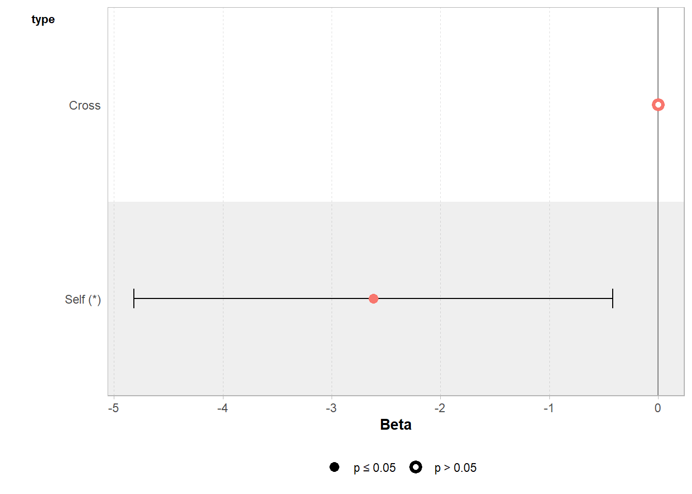

Chapter 14 Multivariate linear models - Week Six
14.1 Multivariate linear models
So far we have worked almost exclusively with single explanatory variables either continuous (regression) or categorical (t-test or ANOVA). But what about analyses where we have more than one possible explanatory variable? Extra terms can easily be incorporated into linear models in order to test this.
14.2 Factorial linear models
The example data is the response of above ground plant biomass production of grassland plots in relation to two resource addition treatments. The addition of Fertiliser to the soil and the addition of Light to the grassland understorey. If biomass is limited by the nutrients in the soil, we would expect the addition of fertiliser to increase production. If biomass is limited by low levels of light caused by plant crowding we would expect an addition of light to increase biomass.
biomass <- read_csv("data/biomass.csv")## Rows: 64 Columns: 4## -- Column specification --------------------------------------------------------
## Delimiter: ","
## chr (3): Fert, Light, FL
## dbl (1): Biomass.m2##
## i Use `spec()` to retrieve the full column specification for this data.
## i Specify the column types or set `show_col_types = FALSE` to quiet this message.You should first check the data and look at the top rows, we can see that this shows the application or non-application of fertiliser and light additions, because all four possible combinations are present, this is known as a fully factorial design:
control (F- L-, no added light or fertiliser)
fertiliser (F+ L-)
light (F- L+)
addition of both (F+ L+)
Close inspection of the dataset shows that the same data is presented in two ways:
Column 1 shows the status of Fertiliser only (F +/-) (two levels)
Column 2 shows the status of Light only (L +/-) (two levels)
Column 3 shows whether fertiliser and light have been applied (four levels, a combination of the previous two columns)
Column 4 shows the biomass
EXERCISE -Check the data
# check the structure of the data
glimpse(biomass)
# check data is in a tidy format
head(biomass)
# check variable names
colnames(biomass)
# check for duplication
biomass %>%
duplicated() %>%
sum()
# check for typos - by looking at impossible values
biomass %>%
summarise(min=min(Biomass.m2, na.rm=TRUE),
max=max(Biomass.m2, na.rm=TRUE))
# check for typos by looking at distinct characters/values
biomass %>%
distinct(Fert)
biomass %>%
distinct(Light)
biomass %>%
distinct(FL)
# missing values
biomass %>%
is.na() %>%
sum()
# quick summary
summary(biomass)14.2.1 Data summary
So we have 64 observations with four variables, the last column is the response variable (biomass) and the other three columns are two different ways of indicating the experimental design.
If we use column 3 - we are treating the design as though it is a one-way ANOVA (with four levels)
If we use columns 1 & 2 - we are treating this as a factorial design
We will look at the two different ways to analyse this data then, and the pros and cons of these two approaches.
14.2.2 One-way ANOVA

Figure 14.1: Boxplot and individual biomass values (black points) with treatment means (red diamonds)
Plotting the data and superimposing mean values produces the graph shown above. Now we are confident there is a difference in our sample means, we can begin a linear model to quantify this and test it against a null hypothesis.
If we use the FL column as a predictor then this is equivalent to a four-level one way ANOVA.
ls_1 <- lm(Biomass.m2 ~ FL, data = biomass)
summary(ls_1)Call:
lm(formula = Biomass.m2 ~ FL, data = biomass)
Residuals:
Min 1Q Median 3Q Max
-233.619 -42.842 1.356 67.961 175.381
Coefficients:
Estimate Std. Error t value Pr(>|t|)
(Intercept) 355.79 23.14 15.376 < 2e-16 ***
FLF-L+ 30.12 32.72 0.921 0.36095
FLF+L- 93.69 32.72 2.863 0.00577 **
FLF+L+ 219.23 32.72 6.699 8.13e-09 ***
---
Signif. codes: 0 ‘***’ 0.001 ‘**’ 0.01 ‘*’ 0.05 ‘.’ 0.1 ‘ ’ 1
Residual standard error: 92.56 on 60 degrees of freedom
Multiple R-squared: 0.4686, Adjusted R-squared: 0.442
F-statistic: 17.63 on 3 and 60 DF, p-value: 2.528e-08We can see that the control treatment (F- L-) is the intercept with a mean of 356g and standard error of 23g. The Light treatment adds an average of 30g to the biomass (but this close to the standard error of this estimated mean difference - 32.72g). In contrast the addition of fertiliser adds 93g to the biomass.
If we wanted to get the precise confidence intervals we could use broom::tidy(ls_1, conf.int = T) or confint(ls1).
We can visualise these differences with a coefficient plot, and see clearly that adding light by itself produce a slight increase in the mean biomass of our samples but the 95% confidence interval includes zero, so we don’t have any real confidence that this is a consistent/true effect.
GGally::ggcoef_model(ls_1,
show_p_values=FALSE,
signif_stars = FALSE,
conf.level=0.95)
Figure 14.2: Effects of light and fertiliser treatments on biomass relative to an untreated control (error bars = 95% CI)
But what about the fourth level - combined fertiliser and light treatments? If there is no interaction (combined effect) between light and fertiliser then we would expect the average biomass difference caused by the light and the and the average biomass difference caused by fertiliser to add together to approximately the value found in the combined treatment.
In other words if one treatment has an effect size of A, and another treatment has an effect size of B, then ANOVA predicts that in combination the effect size of the combined treatments is A + B.
# combine the average mean differences of the light effect and fertiliser effect
coef(ls_1)[2] + coef(ls_1)[3]
# compare this to the average difference of the combined treatment
coef(ls_1)[4]predicted combined effect = 123.82
observed combined effect = 219.2
In this example we can see clearly that combining the separate treatments does not add up to the combined value. The mean biomass of the combined treatment is well above the additive prediction.
The mean biomass of the combined treatment is well above what we would expect from the additive effects alone. This suggests there may be a positive interaction (that light and fertiliser treatments produce a sum effect that is greater than could be predicted by looking at their individual effects).
Using our one-way ANOVA design we are able to accurately estimate the mean difference between the controlled group and the combined treatment group. But we cannot really say anything concrete about the strength of the interaction effect e.g. is their a true interaction? how confident can we be in this effect? How does the strength of the interaction effect compare to the main effects?
In contrast to the one-way ANOVA approach, a factorial design lets us test and compare additive effects and interaction effects
14.2.3 Testing for interactions

Figure 14.3: A comparison of an additive model vs an interaction model
EXERCISE - Plot the data and determine whether you think there is any sign of an interaction effect? - Use stat_summary() to make summary points and lines.
biomass %>% ggplot(aes(x=Fert, y=Biomass.m2, colour = Light, fill = Light, group = Light))+
geom_jitter(width=0.1) +
stat_summary(
geom = "point",
fun = "mean",
size = 3,
shape = 23
)+stat_summary(
geom = "line",
fun = "mean",
size = 1, linetype = "dashed"
)
To produce an interactive model, we need to use the separate factors for fertiliser and light rather than the single fl factor. When we make this model, we include the main effects of Light and Fert, if the additive model explains sufficient variance then this will be enough, but if we suspect an interaction term we add this as Light:Fert written out as follows:
ls_2 <- lm(Biomass.m2 ~ Fert + # main effect
Light + # main effect
Fert:Light, # interaction term
data = biomass)
summary(ls_2)Call:
lm(formula = Biomass.m2 ~ Fert + Light + Fert:Light, data = biomass)
Residuals:
Min 1Q Median 3Q Max
-233.619 -42.842 1.356 67.961 175.381
Coefficients:
Estimate Std. Error t value Pr(>|t|)
(Intercept) 355.79 23.14 15.376 < 2e-16 ***
FertF+ 93.69 32.72 2.863 0.00577 **
LightL+ 30.13 32.72 0.921 0.36095
FertF+:LightL+ 95.41 46.28 2.062 0.04359 *
---
Signif. codes: 0 ‘***’ 0.001 ‘**’ 0.01 ‘*’ 0.05 ‘.’ 0.1 ‘ ’ 1
Residual standard error: 92.56 on 60 degrees of freedom
Multiple R-squared: 0.4686, Adjusted R-squared: 0.442
F-statistic: 17.63 on 3 and 60 DF, p-value: 2.528e-08Notice the estimates of the mean differences are the same as the previous one-way ANOVA model. The fourth line now indicates how much of an effect the two factors interacting changes the mean. Also note the standard error is larger, there is less power to accurately estimate an interaction over a main effect.
GGally::ggcoef_model(ls_2,
show_p_values=FALSE,
signif_stars = FALSE,
conf.level=0.95)
When we use a factorial combination, the last line of the table of coefficients estimates the size of the interaction effect at around 95g. So if combining the light and fertilisation treatments produced a biomass equivalent to their additive predictions, the estimate of the interaction would be zero. Instead it is 95g more than we would expect from the additive effects alone. This means in order to work out the estimated biomass for the treatment of light and fertiliser we must sum the additive effects of Light+ Fert and the interaction effect Light:Fert.
14.2.4 Model estimates and confidence intervals
When we compare this to our one-way ANOVA model, we must add the single terms and the interaction term, this should add up to the combined treatment from our first model:
# model 1
coef(ls_1)[4]
# model 2
coef(ls_2)[2] + coef(ls_2)[3] + coef(ls_2)[4]Don’t make the mistake of looking at the main effect of light treatment, and reporting there is no effect because the uncertainty intervals cross zero. The main effect of light gives the average effect across the two fertiliser treatments. However, because of the interaction effect, we know this doesn’t tell the whole story - whether light has an effect depends on whether fertiliser has been applied.
So, if you have a significant interaction term, you must consider the main effects, regardless of whether they are significant on their own.
14.2.5 ANOVA tables
So you have made a linear model with an interaction term, how do you report whether this interaction is significant? How do you report the main effect terms when there is an interaction present?
- Start with the interaction
In previous chapters we ran the anova() function directly on our linear model. This works well for simple & ‘balanced’ designs (there are equal sample sizes in each level of a factor), but can be misleading with ‘unbalanced’ designs or models with complex interactions.
In order to report an F statistic for the interaction effect, we need to carry out an F-test of two models, one with and one without the interaction effect. This is easy with the function drop1()
drop1(ls_2, test = "F")Single term deletions
Model:
Biomass.m2 ~ Fert + Light + Fert:Light
Df Sum of Sq RSS AIC F value Pr(>F)
<none> 513998 583.43
Fert:Light 1 36409 550407 585.81 4.2501 0.04359 *
---
Signif. codes: 0 ‘***’ 0.001 ‘**’ 0.01 ‘*’ 0.05 ‘.’ 0.1 ‘ ’ 1This F-test is testing the null hypothesis that there is no true interaction effect. The significance test rejects the null hypothesis (just). The drop1() function also provides the Akaike information criterion (AIC), an alternative method of model selection (more on this later).
We could now write this up as follows:
There was an interactive effect of light and fertiliser treatments (ANOVA F1,60 = 4.25, P = 0.044) in which combining treatments produced substantially more biomass (95.4g [95% CI: 2.8 - 188]) than expected from the additive effects alone (Fertiliser 93.7g [28.2 - 159.2], Light 30.1g [-35.3 - 95.6]).
Do not make the mistake of just reporting the statistics, the interesting bit is the size of the effect (estimate) and the uncertainty (confidence intervals).
Remember to check the assumptions of your full model
- Main effects
A good thing about the drop1() function is that if there are interactions in the model, it stops there. This is because if the interaction effect is significant, then the main effects must be included, even if they aren’t significant on their own. We can make further models to test the main effects but these are less important because we already know the interaction term provides the main result.
If we decide to include reports of the main effect then estimates and confidence intervals should come from the full model, but we need to produce an interaction free model to produce accurate F-values (especially for unbalanced designs, see below).
# we have to remove the interaction term before we can keep using drop1()
ls_3 <- lm(Biomass.m2 ~ Fert + Light, data = biomass)
drop1(ls_3, test = "F")Single term deletions
Model:
Biomass.m2 ~ Fert + Light
Df Sum of Sq RSS AIC F value Pr(>F)
<none> 550407 585.81
Fert 1 319889 870296 613.13 35.452 1.395e-07 ***
Light 1 96915 647323 594.19 10.741 0.001732 **
---
Signif. codes: 0 ‘***’ 0.001 ‘**’ 0.01 ‘*’ 0.05 ‘.’ 0.1 ‘ ’ 1
You can use this reduced model to get F values, BUT reports of estimates should come from the full model.
14.3 Balanced/Unbalanced designs
In an unbalanced design when you run the anova() function on your model, the order in which your variables were included can have an effect e.g.
lm(Fert + Light) would give a different anova table to
lm(Light + Fert)
In the examples above, you are unlikely to find much of a difference between running the drop1() function or anova() on the complex or reduced models. This is because these designs are ‘balanced’ (equal numbers in each level of a predictor). When designs are not balanced then the order matters when we use anova() - this is because the sum of squares is calculated sequentially (in the order of the formula), and so we could get different results depending on the order in which we assemble predictors into our model!!!!!!!!
14.3.1 Practice
Let’s start by making a deliberately unbalanced dataset
# make three vectors and combine them into a new tibble
height <- c(50,57,91,94,102,110,57,71,85,105,120)
size <- c(rep("small", 2), rep("large", 4), rep("small", 3), rep("large", 2))
treatment <- c(rep("Control", 6), rep("Removal", 5))
unbalanced <- tibble(height, size, treatment)
unbalancedEXERCISE - Produce a linear model testing size and treatment against height. Try making two models swapping the order for including the two predictors and compare them with anova()**
model_1 <- lm(height ~ treatment + size, data = unbalanced)
anova(model_1)
model_2 <- lm(height ~ size + treatment, data = unbalanced)
anova(model_2)> anova(model_1)
Analysis of Variance Table
Response: height
Df Sum Sq Mean Sq F value Pr(>F)
treatment 1 35.3 35.3 0.3725 0.5586
size 1 4846.0 4846.0 51.0676 9.746e-05 ***
Residuals 8 759.2 94.9
---
Signif. codes: 0 ‘***’ 0.001 ‘**’ 0.01 ‘*’ 0.05 ‘.’ 0.1 ‘ ’ 1
> anova(model_2)
Analysis of Variance Table
Response: height
Df Sum Sq Mean Sq F value Pr(>F)
size 1 4291.2 4291.2 45.2208 0.0001489 ***
treatment 1 590.2 590.2 6.2193 0.0372980 *
Residuals 8 759.2 94.9
---
Signif. codes: 0 ‘***’ 0.001 ‘**’ 0.01 ‘*’ 0.05 ‘.’ 0.1 ‘ ’ 1
Compare these two anova tables. Same data, same predictors, but a different conclusion just because of the order the terms were included in the model!
EXERCISE - Now compare your two models with the drop1() function
drop1(model_1)
drop1(model_2)Single term deletions
Model:
height ~ treatment + size
Df Sum of Sq RSS AIC
<none> 759.2 52.577
treatment 1 590.2 1349.3 56.904
size 1 4846.0 5605.2 72.569
Single term deletionsBecause the drop1 function drops one term from the model, then adds it back in and drops a new one it doesn’t matter what order they were included.
14.4 post-hoc
In this example it is unnecessary to spend time looking at pairwise comparisons between the four possible levels, the interesting finding is to report the strength of the interaction effect. But it is possible to generate estimated means, and produce pairwise comparisons with the emmeans() package
emmeans::emmeans(ls_2, specs = pairwise ~ Light + Fert + Light:Fert)
# including the argument pairwise in front of the ~ prompts the post-hoc pairwise comparisons.
# $emmeans contains the estimate mean values for each possible combination (with confidence intervals)
# $ contrasts contains tukey test post hoc comparisons between levels$emmeans
Light Fert emmean SE df lower.CL upper.CL
L- F- 356 23.1 60 310 402
L+ F- 386 23.1 60 340 432
L- F+ 449 23.1 60 403 496
L+ F+ 575 23.1 60 529 621
Confidence level used: 0.95
$contrasts
contrast estimate SE df t.ratio p.value
(L- F-) - (L+ F-) -30.1 32.7 60 -0.921 0.7940
(L- F-) - (L- F+) -93.7 32.7 60 -2.863 0.0287
(L- F-) - (L+ F+) -219.2 32.7 60 -6.699 <.0001
(L+ F-) - (L- F+) -63.6 32.7 60 -1.943 0.2215
(L+ F-) - (L+ F+) -189.1 32.7 60 -5.779 <.0001
(L- F+) - (L+ F+) -125.5 32.7 60 -3.836 0.0017
P value adjustment: tukey method for comparing a family of 4 estimates 14.5 Continuous Linear Models
The previous section looked at an interaction between two categorical variables, we can also examine interactions between a factor and a continuous variable. Often referred to as ANCOVA.
pollution <- read_csv("data/pollution.csv")The data is from an experimental study of the effects of low-level atmospheric pollutants and drought on agricultural yields. The experiment aimed to see how the yields soya bean (William variety), were affected by stress and Ozone levels. Your task is to first determine whether there is any evidence of an interaction effect, and if not report the effects of the two predictors separately.
EXERCISE -Explore the data
# check the structure of the data
glimpse(pollution)
# check data is in a tidy format
head(pollution)
# check variable names
colnames(pollution)
# check for duplication
pollution %>%
duplicated() %>%
sum()
# check for typos - by looking at impossible values
# quick summary
summary(biomass)
# check for typos by looking at distinct characters/values
pollution %>%
distinct(Stress)
# missing values
biomass %>%
is.na() %>%
sum()EXERCISE - Visualise the data
pollution %>%
ggplot(aes(x = O3, y = William))+
geom_point()+
geom_smooth(method = "lm")+
facet_wrap(~ Stress)
EXERCISE - Model the data
William_ls1 <- lm(William ~ O3 + Stress + O3:Stress, data = pollution)
William_ls1 %>%
broom::tidy(conf.int = T)## # A tibble: 4 x 7
## term estimate std.error statistic p.value conf.low conf.high
## <chr> <dbl> <dbl> <dbl> <dbl> <dbl> <dbl>
## 1 (Intercept) 8.49 0.0975 87.1 1.34e-33 8.29 8.69
## 2 O3 -6.47 1.40 -4.61 9.29e- 5 -9.35 -3.59
## 3 StressWell-watered 0.264 0.138 1.92 6.64e- 2 -0.0192 0.548
## 4 O3:StressWell-watered -1.35 1.98 -0.680 5.03e- 1 -5.42 2.73# A tibble: 4 x 7
term estimate std.error statistic p.value conf.low conf.high
<chr> <dbl> <dbl> <dbl> <dbl> <dbl> <dbl>
1 (Intercept) 8.49 0.0975 87.1 1.34e-33 8.29 8.69
2 O3 -6.47 1.40 -4.61 9.29e- 5 -9.35 -3.59
3 StressWell-watered 0.264 0.138 1.92 6.64e- 2 -0.0192 0.548
4 O3:StressWell-watered -1.35 1.98 -0.680 5.03e- 1 -5.42 2.73 It looks as though there is no strong evidence here for an interaction effect, but before we proceed any further we should check that the model is a good fit for our data.
performance::check_model(William_ls1)
Everything looks pretty good, so now we could go ahead and simplify our model.
drop1(William_ls1, test = "F")Single term deletions
Model:
William ~ O3 + Stress + O3:Stress
Df Sum of Sq RSS AIC F value Pr(>F)
<none> 0.56985 -110.91
O3:Stress 1 0.010129 0.57998 -112.38 0.4621 0.5026William_ls2 <- lm(William ~ O3 + Stress, data = pollution) # A tibble: 3 x 7
term estimate std.error statistic p.value conf.low conf.high
<chr> <dbl> <dbl> <dbl> <dbl> <dbl> <dbl>
1 (Intercept) 8.53 0.0733 116. 5.17e-38 8.38 8.68
2 O3 -7.14 0.981 -7.28 7.89e- 8 -9.15 -5.13
3 StressWell-watered 0.178 0.0535 3.33 2.55e- 3 0.0682 0.288drop1(William_ls2, test = "F")Model:
William ~ O3 + Stress
Df Sum of Sq RSS AIC F value Pr(>F)
<none> 0.57998 -112.379
O3 1 1.13812 1.71810 -81.799 52.983 7.893e-08 ***
Stress 1 0.23764 0.81762 -104.077 11.063 0.002547 **
EXERCISE - Write up the results
I hypothesised that plants under stress might react more negatively to pollution than non-stressed plants, however when tested I found no evidence of a negative interation effect between stress and Ozone levels (F1,27 = 0.4621, P = 0.5). Individually however, while well-watered plants had higher yields than stressed plants (mean 0.178 [95% CI: 0.0682 - 0.288]) (F1,28 = 11, P = 0.003), there was a much larger effect of Ozone, where every unit increase (\(\mu\)L L-1) produced a mean decrease in yield of 7.14 kg ha-1 [5.13 - 9.15] (F1,28 = 53, P < 0.001).
14.6 Summary
Always have a good hypothesis for including an interaction
When models have significant interaction effects you must always consider the main terms even if they are not significant by themselves
Report F values from interactions as a priority
IF interactions are significant then estimates should come from the full model, while F-values should come from a reduced model (for main effects). IF interaction terms are not significant they can be removed (model simplification).
Use drop1() to avoid mistakes when using an unbalanced experiment design
Always report estimates and effect sizes - this is the important bit - and easy to lose sight of when models get more complicated
END